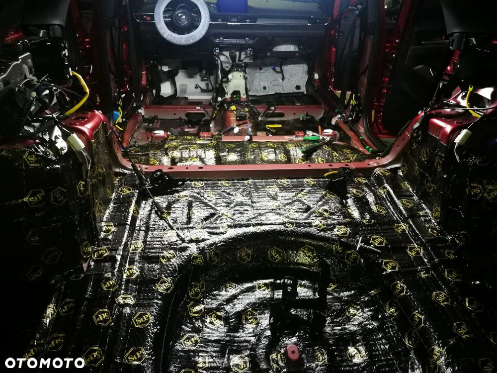
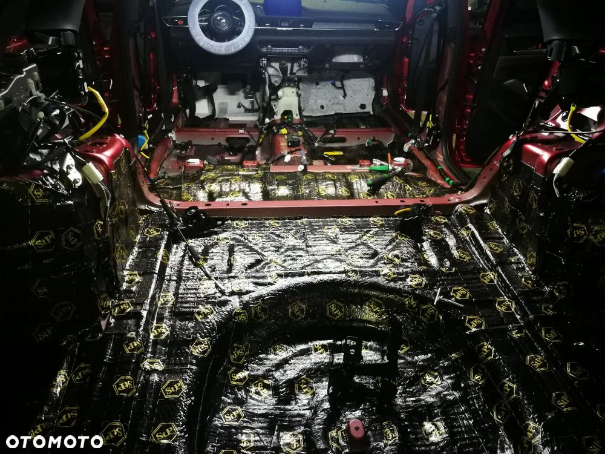

Sprzedaż na F-VAT 23%, podana cena jest ceną BRUTTO.
Jestem pierwszym właścicielem.
Maździa jeździ jak nowa :-)
SkyDREAM to w tamtym czasie najwyższa wersja wyposażenia, brak szyberdachu, bo osobiście nie używam i był to świadomy wybór.
Samochód nie miał ŻADNEJ awarii, tylko odwiedziny w ASO co 15.000km, aktualnie jest po dużym przeglądzie łącznie ze zmianą oleju w skrzyni biegów.
Zainstalowane AndroidAuto po przewodzie (oryginalne doposażenie).
Aktywny tempomat, kamerki 360 stopni, grzane i wentylowane fotele, HUD, niczym nie ustępuje aktualnemu wyposażeniu, no może wyświetlacz główny jest rozmiaru 8 cali :-)
Silnik 2.5 4 cylindry, 195 koników, bardzo dynamiczny, z małym zużyciem paliwa, komfortowa jazda 160km/h jest możliwa, spalanie przy takiej prędkości to 8,5..9,5l/100km. Jadąc do 90km/h można zamknąć trasę z wynikiem 5,5..6l/100km.
Skrzynia biegów 6-cio biegowa hydrokinetyczna, oczywiście strasznie wolna ;-) Skrzynia jest SUPER!
Samochód jest wyciszony matami, drzwi, podłoga, nadkola, bez dachu, bo wtedy był problem z wypięciem jednej zapinki musującej podsufitkę, wyciszenie zostało wykonane w firmie WyciszAuto.pl.
Aktualnie usługa wyciszenia to koszt 11.000zł netto.
Dzięki temu zabiegowi Mazda jest cicha a audio BOSSE gra jeszcze lepiej.
W 2023 roku zdarzyła się szkoda parkingowa, Pani cofając przytarła prawy róg zderzaka i 3mm błotnika, zdjęcie w załączeniu.
Malowany zderzak a na rancie błotnika zrobiona jest zaprawka, trzeba się mocno przyglądać, żeby to zauważyć.
Dla zainteresowanych mogę wysłać historie serwisową z ASO Mazdy.
Serwisowana w 99% w ASO Mazda Odyssey na Bródnie, dzielnicy Warszawa. Jedyny słuszny serwis :-)
Jestem fanem Mazdy, bo to niezawodne, ładne, estetyczne i przyjemne w codziennej eksploatacji samochody.
Samochodem ostatnie 2 lata jeździła moja Córka, aktualnie przesiadła się na nową Mazdę 3 nawiasem równie śliczny samochód.
Do samochodu są 2 komplety kół. Zimowe nowe po 1 sezonie, letnie od nowości.
Z przodu nowe tarcze i klocki, wymiana już poza ASO, bo oryginalne tarcze nie wiedzieć czemu po 2 latach od wymiany zaczęły mocno bić.
Adres e-mail: pb@quasarelectronics.pl

 
